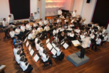

±70 muzikanten
olv Ronny Buurink
uit Enschede

{kind=link}
{kind=link}
{kind=link}
Studenten Harmonie Orkest Twente
In 1991 is het Studenten Harmonie Orkest Twente opgericht. Het orkest, beter bekend als SHOT, is verbonden aan de Universiteit van Twente in Enschede. Gemiddeld bestaat het orkest uit 50 muzikanten afkomstig van de universiteit en omliggende hogescholen. Sinds 1993 staat het orkest onder leiding van Ronny Buurink.
Tijdens het relatief korte bestaan van het orkest, heeft SHOT een traditie opgebouwd om ieder jaar een tweetal concerten op en rond de universiteit te geven. Als voorbereiding op deze concerten trekt SHOT zich terug in een klein dorpje om tijdens een repetitieweekend de laatste hand aan de muzikaliteit te leggen. Naast deze optredens heeft SHOT regelmatig op andere locaties in het land optredens gegeven en is het een traditie om eens in de twee jaar op concertreis te gaan. Tijdens deze reizen wordt een festival in het buitenland aangedaan en vaak deelgenomen aan een internationaal concours. Een recent hoogtepunt was de tiendaagse rondreis in China, waarin niet alleen de muzikaliteit en concerten, maar ook veel avonturen en gezelligheid de boventoon vierden!

Ronny Buurink werd op 3 december 1965 geboren in Enschede. De klarinet was het instrument van zijn keuze en daar is het tot nu toe altijd bij gebleven. Op zijn negentiende begon hij de studie klarinet aan het Conservatorium in Enschede. Een jaar later werd vervolgens ook begonnen aan een studie Harmonie en Fanfare bij Jan van Ossenbruggen en Gerrit Buitenhuis, dit om zich verder te kunnen bekwamen als dirigent. In 1994 werd met goed resultaat zijn studie HaFaBra-directie eerste fase afgesloten. Inmiddels had hij al ruimschoots ervaring opgedaan in het dirigeren van diverse harmonieorkesten in de regio Twente. In 2001 heeft Ronny zijn studie HaFaBra-directie een vervolg gegeven aan de Messiaen Academie in Enschede, waar hij de studie HaFaBra-directie tweede fase in 2004 met goed gevolg heeft afgerond.
Meer informatie over SHOT op: www.shot.utwente.nl/
±80 muzikanten
±120 zangers (bijgestaan door SKA)
olv Daan Admiraal
uit Delft
{kind=link}
{kind=link}
{kind=link}
Krashna Musika
Krashna Musika is het (klassieke) studenten muziekgezelschap in Delft. Het werd in 1968 op gericht uit twee studentenkoren en een studentenorkest. Twee jaar later werd de Slavische naam 'Krashna Musika' toegevoegd, wat 'mooie muziek' betekent. Krashna Musika bestaat uit een orkest, een koor en een kamermuziekafdeling.
Met het koor en orkest worden er twee à drie keer per jaar concerten gegeven in en rondom Delft. Bij deze concerten wordt naast het bekende repertoire - zoals recentelijk de Eerste Symfonie van Mahler, Stravinsky's Vuurvogel en Bach's Magnificat - ook vaak gekozen voor unieke, onbekende werken. Zo werd afgelopen mei na een tournee naar Praag een concert gevuld met werken van Janacek en Martinu en werd in juni 2010 het Mare Liberum van Roel van Oosten uitgevoerd.
Daan Admiraal
Het orkest wordt al meer dan 25 jaar geïnspireerd door Daan Admiraal. Hij studeerde hobo aan het Amsterdams Conservatorium, waar hij in 1973 het solo-examen aflegde wat werd bekroond met de Zilveren Vriendenkrans. In 1979 studeerde hij af op orkestdirectie bij Louis Stotijn, i.s.m. het Residentie Orkest. Sinds 1981 is Daan Admiraal als dirigent verbonden met Krashna Musika, waar hij tot 1993 ook het koor dirigeerde en nog steeds het orkest dirigeert. Momenteel is hij dirigent van het VU-orkest te Amsterdam, het toonkunst koor Den Haag, het Symfonie Orkest Eindhoven en bij 'de Philharmonie'.
Studentenkoor Amsterdam
Bij dit concert wordt het koor van Krashna Musika versterkt met het Studentenkoor Amsterdam. Het SKA werd in 1987 opgericht en is een enthousiast en ambitieus koor en voert verschillende keren per jaar klassieke koorwerken uit, vaak met een professioneel orkest en bekende solisten. Het bestaat uit ongeveer tachtig ervaren zangers en zangeressen die verbonden zijn (geweest) met de UvA.
Meer informatie over Krashna Musika op: www.krashna.nl
±100 muzikanten
olv Jos Schroevers
uit Eindhoven
{kind=link}
{kind=link}
{kind=link}
Harmonieorkest Auletes
Auletes is een ondervereniging van het Eindhovens Studenten Muziek Gezelschap Quadrivium. Quadrivium is opgericht in 1964 en bestaat uit een gemengd koor, een kamerorkest, een blokfluitensemble en een harmonieorkest. Daarnaast heeft de vereniging leden die enkel gebruik maken van de repetitieruimtes en piano's, de zogenaamde pianoleden. Quadrivium is Latijn voor “viersprong” en refereert aan de middeleeuwse opleiding aan de universiteit, bestaande uit rekenkunde, meetkunde, muziek en astronomie. Het harmonieorkest Auletes is de grootste ondervereniging van ESMG Quadrivium. Enkele grote projecten van de afgelopen periode zijn deelname aan de concertserie “Verrassende Ontmoetingen” met een concert in de Concertzaal van Tilburg, en het benefietconcert “Q’s Serious Concert” in Muziekgebouw Frits Philips in Eindhoven. Hierbij werd samen met enkele bekende artiesten geld ingezameld voor Serious Request.

Sinds oktober 2008 staat harmonieorkest Auletes van ESMG Quadrivium onder leiding van de ambitieuze en gepassioneerde dirigent Jos Schroevers. Jos studeerde slagwerk aan het Sweelinck Conservatorium te Amsterdam en het Brabants Conservatorium in Tilburg. Daarnaast volgde hij ook de studie Hafa-directie. Deze studie werd met succes in 2001 afgesloten. In 2005 is Jos gestart met de studie 2e fase Hafa-directie aan het Koninklijk Conservatorium in Den Haag welke hij in 2008 heeft afgerond. In de afgelopen 10 jaar heeft Jos zeer regelmatig repetities van het Koninklijk Concertgebouworkest bijgewoond wanneer grote dirigenten dit orkest dirigeerden. In april 2011 nam Jos deel aan een prestigieuze masterclass in New York waarbij hij geselecteerd werd als één van de 8 kandidaten. Tijdens het afsluitende concert dirigeerde hij Le Sacre du Printemps. Hij verleende in de zomer van 2011 voor de eerste keer zijn medewerking bij de Summer Academy van het NJO Dutch Orchestra and Ensemble Academy als assistent dirigent van Antony Hermus. Vanaf medio oktober 2011 zal hij wederom assistent dirigent zijn bij het NJO Dutch Orchestra and Ensemble Academy. Dit project is een samenwerking tussen het NJO Dutch Orchestra and Ensemble Academy en de Dutch National Opera Academy.
Ten slotte is Jos is de winnaar van de prestigieuze Nederlandse dirigentenprijs van het Kersjesfonds welke hij heeft ontvangen op 28 oktober 2011 in het Concertgebouw te Amsterdam.
Meer informatie over Quadrivium op: www.esmgquadrivium.nl